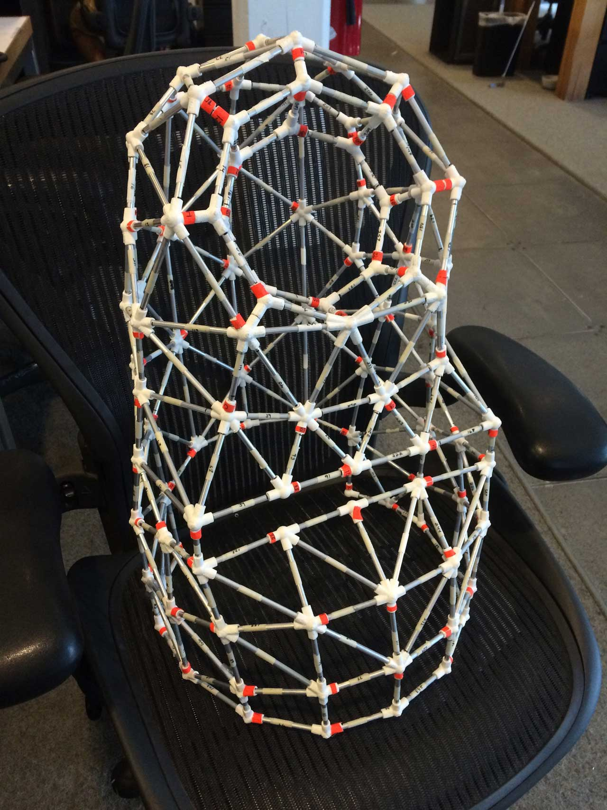

Building a Needy Robot
This article originally appeared on Medium: https://medium.com/the-lodge-at-w-k/building-a-needy-robot-832d4a517b5a
We wanted to build a robot that would require our help with everything instead of giving us help with anything.
So we did.
On May 19, 2015, at an independent advertising agency, four engineers, four UX designers, an art director, a copywriter, and a digital strategist jammed themselves into a conference room to begin a four-day design sprint aimed at laying the creative foundation for a robot. Not one of those robots from The Terminator though, and not one of those hyper-productive robots you’d find in a Detroit auto factory either.
Nope.
One of us had had the idea to build a robot that needed our help to do nearly everything, and the rest of us said, “yep.”
We had a plan: three months to make a needy robot.
During those four chaotic days we had many (civil) arguments brought about by many more lightning-round design exercises. We grouped and disbanded in combinations that make Dr. Heiter look like a rank amateur. We scribbled and wrote, presented and reacted, argued, voted, slashed, burned, and blew ideas up to the sky only to tear them back down to their foundations.
When the dust settled—and everyone was spent—we had a plan: three months to make a needy robot.

_Needy's shell, without robotics or fur. By the end of his life, this rig had so much hot glue and duct tape on it, it's a wonder he was able to get around without falling apart.
Why three months? Well, in many product-design scenarios, constraints are the lifeblood of productivity—time constraints create focus, right? If the goal of our time constraint was increased productivity, however, we missed wider than this poor bastard.
We gave ourselves three months — it took us ten. Ten months to turn the initial idea of a helpless robot into something real.
Our north star, creating a robot that makes us care, kept us afloat through the process of trial and experimentation that is building a robot. We failed, repeatedly. We blew the project out of scope, letting our imaginations run wild with the fictional story of a robot we hadn’t yet built—and in no reality could. In the beginning we had more misses than hits, and at times it got incredibly frustrating.
Yet, in spite of these tribulations, we never lost our Polaris, and we ultimately navigated our way to something truly wonderful. Small successes turned into medium-sized wins that, in turn, became large triumphs. Eventually, those triumphs summed up to what I consider to be one of the most fulfilling, educational, and engaging explorations into human-computer interaction (HCI) we’ve worked on in The Lodge.
We built a fucking robot, and its name is Needybot.
Glamor shot of Needy rolling down the sixth-floor catwalk.
When we didn’t have the technology, we found it. When we didn’t have the skills, we learned, rapidly.
For a team that was historically focused only on databases, service layers, API calls, and screen-based HCI, the move into four-dimensional HCI design was jarring.
The rules, strengths, and limitations of screen-based interaction apply limitedly to the real world — the vocabulary of the system is different. Words like gravity have very real consequences, and interference like ambient noise or foot traffic can ruin your day, if not dispassionately nullify that killer new feature you stayed up all night writing.
The pace and scale at which we have had to learn in order just to produce Needybot has been massive for both our engineering and design teams. The litany of subjects and skills required to build, shape, and create a robot that needs help with nearly everything represents a set of information, knowledge, and craft not typically found at an advertising agency.
From computer vision to machine learning, conversation design to 3D fabrication, human-robot interaction design to robotics, we have leveled up almost daily in the months since this project started.
It is a point of pride for us to be able to say that, apart from the mobile base—which we still hacked to pieces—we fabricated Needybot 100% in-house. When we didn’t have the technology, we found it. When we didn’t have the skills, we learned, rapidly.
_An office-mate's son bending down to interact with Needybot.
Needy reminds us of how deeply ingrained the social mechanics of our daily lives are, and how trying to describe a thing is much different from knowing it.
On April 12, 2016, nearly one year after we decided design a needy robot, we let Needybot out of the shop and sent it out into our office building for the first time.
We’ve since watched Needybot use the skills and features we’ve given it, both in person and behind the soft glow of a terminal screen as its log output tells us who it just met and where it just went. We learn about its successes and failures and teach it new tricks almost daily. We see faces light up during interactions with Needy, and we feel warm inside.
And then we high-five, because, hey, we’re proud of what we made.
Perhaps the most astonishing part of all of this is that Needybot is teaching us faster than we are teaching it — about the nature of our assumptions as well as the nature of human-robot interaction.
Needy reminds us of how deeply ingrained the social mechanics of our daily lives are, and how trying to describe a thing is much different from knowing it. Needybot reinforces the subtle, yet nontrivial, differences between nature — how we built Needy — and nurture — how Needy is cared for.
Needybot is being launched on an arc that will see it face new challenges as it integrates with the culture in our office building. Its goals and attitude will hinge upon how the human element of our advertising agency receives and treats Needy — although Needybot was created by The Lodge, the people of our agency and how they treat Needybot will be largely responsible for its development as a robot.
Needybot after we introduced him to a class from the International School of Portland. The kids basically ran around in circles with Needy, like a rugby scrum.
Needybot is a labor of love that couldn’t have happened without countless hours of work on the part of many, many dedicated individuals. Given the spectrum of talent in The Lodge and its many partners throughout our office, coupled with the cultural background of Wieden+Kennedy, it is arguable that Needybot couldn’t have happened anywhere else.
Check out @needybot on Instagram or Twitter, learn more about Needybot at http://needybot.io, and say hi to The Lodge at Wieden+Kennedy here.